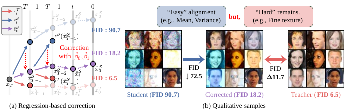
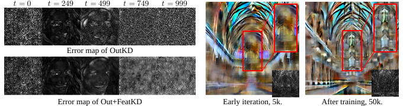
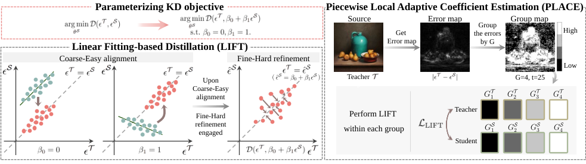
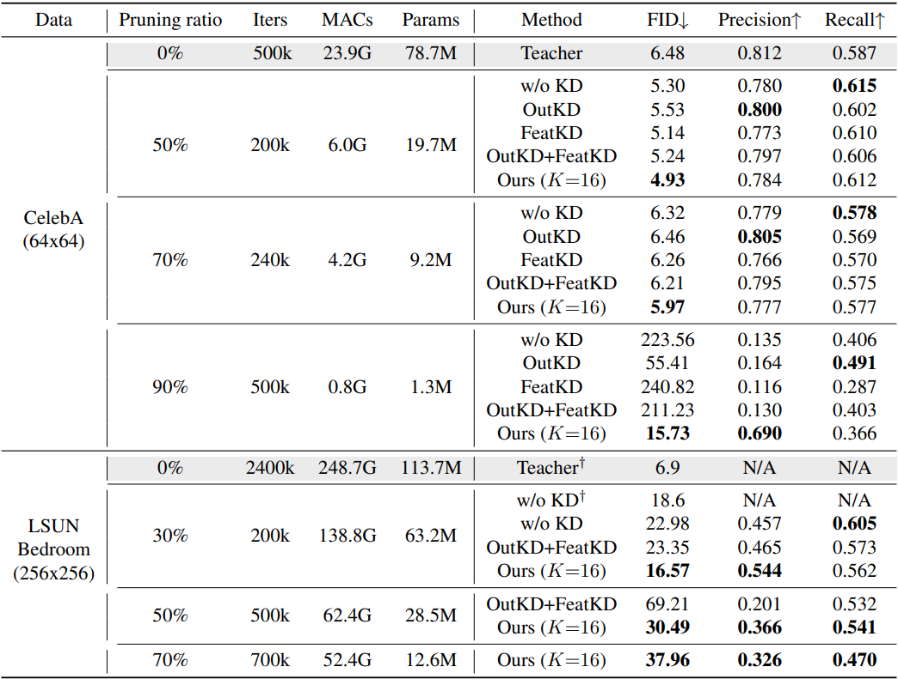
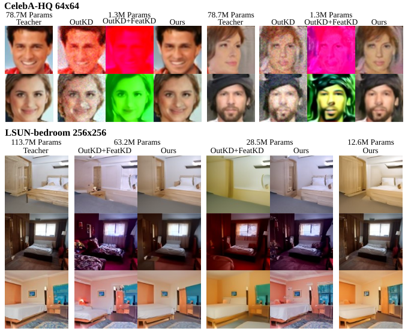

We demonstrate that in knowledge distillation for diffusion models, the teacher network’s highly complex denoising process—stemming from its substantially larger capacity—poses a significant challenge for the student model to faithfully mimic.
To address this problem, we propose a coarse-to-fine distillation framework with
LInear FiTting-based distillation (LIFT) and Piecewise Local Adaptive Coefficient Estimation (PLACE). First, LIFT decomposes the objective into a “coarse” alignment and a “fine” refinement. The student is then trained on coarse alignment before proceeding to hard refinement. Second, Piecewise Local Adaptive Coefficient Estimation extends LIFT to address spatially non-uniform errors by partitioning outputs into error-based groups, providing locally adaptive guidance.
Our comprehensive experimental results demonstrate that ours, LIFT with PLACE, outperforms previous knowledge distillation on diffusion models based on both U-Net and DiT architectures. Furthermore, under extreme compression with a 1.3M-parameter student amounting to only 1.6% of the teacher’s parameters, conventional KD fails to provide sufficient guidance for stable training, with FID scores often degrading to 50–200+. In contrast, our method remains stably convergent and achieves an FID of 15.73.
We show that distillation error is not monolithic. A simple linear regression probe \( \epsilon^{\mathcal T} \approx \hat{\epsilon^{\mathcal S}} =\hat{\beta}_0 + \hat{\beta}_1 \cdot \epsilon^{\mathcal S} \) reveals that it can be decomposed into two distinct components: Coarse-Easy Errors and Fine-Hard Errors. This decomposition explains why conventional KD becomes unstable under large capacity gaps and motivates a coarse-to-fine training strategy.

(1) Coarse-Easy Errors: These errors arise from low-order statistical mismatch between teacher and student, such as differences in mean and variance. These errors can be corrected with just two linear regression coefficients, and this simple correction stabilizes the denoising process.
(2) Fine-Hard Errors: These errors are the remaining non-linear residuals that are not captured by low-order moment alignment. They encode fine-grained teacher behavior and are responsible for the remaining performance gap, especially under aggressive compression.

Distillation error is spatially structured rather than uniform. We observe that large errors concentrate around semantically meaningful regions and evolve throughout training, indicating that some regions are consistently harder to distill than others. This motivates a method that adapts not only to what is hard to learn, but also to where it is hard to learn.

LIFT reformulates diffusion distillation as a “Coarse-to-Fine” objective. It parameterizes teacher-student alignment with linear regression, explicitly separating a coarse alignment term that corrects low-order statistical mismatch from a fine refinement term that models the remaining residual. An adaptive weighting mechanism gradually shifts optimization from coarse correction to fine-detail refinement, enabling stable early training and stronger final performance.
PLACE extends LIFT to handle spatially non-uniform distillation difficulty. Instead of using a single global alignment for the entire output, PLACE groups output elements by error magnitude and estimates local fitting coefficients for each group. This piecewise strategy preserves the simplicity of LIFT while providing stronger guidance in harder regions, improving fidelity without adding parameters or inference-time overhead.
Additional results on text-to-image diffusion (SD 2.1) and DiT can be found in the main paper.


@article{park2021nerfies,
author = {Park, Keunhong and Sinha, Utkarsh and Barron, Jonathan T. and Bouaziz, Sofien and Goldman, Dan B and Seitz, Steven M. and Martin-Brualla, Ricardo},
title = {Nerfies: Deformable Neural Radiance Fields},
journal = {ICCV},
year = {2021},
}